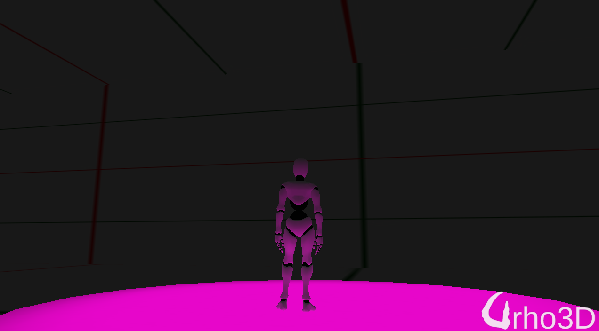
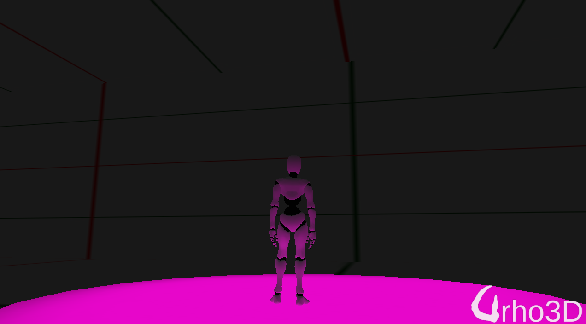

Lumak
repo: https://github.com/Lumak/Urho3D-LightProbe
Below is a pic of lightprobe implementation - there’s no light in the shot, glow on the char is based on SH coeff.


repo: https://github.com/Lumak/Urho3D-LightProbe
Below is a pic of lightprobe implementation - there’s no light in the shot, glow on the char is based on SH coeff.


Global illumination? Looks so cool!

@Lumak good job as usual.

Oh man… there are only so many repos I can fork
 . One of these days I need to spend time converting everything to C# - or does anyone have a cloning machine for Lumak? A C# coding clone?
. One of these days I need to spend time converting everything to C# - or does anyone have a cloning machine for Lumak? A C# coding clone?

Repo updated: optimization and some clean up.
@artgolf1000 Currently, just a light probe which illuminates the char. But I guess it could be possible to use it for GI, I don’t have knowledge on how, though.
@johnnycable thanks and enjoy.
@stark7 unfortunately I’m not touching C# atm.
Repo updated: code and shaders. I think I nitpicked enough.
I have noticed that the Godot engine use GIProbe technology to achieve realtime GI on desktop, you may get some brief from their blog.
Though my screen space global illumination shader runs smoothly on mobile devices, but the result is not good in all cases.
I wonder if the GIProbe is similar to Lumak’s LightProbe?
I briefly reviewed the code and, no, they’re not the same. My work is based on “ An Efficient Representation for Irradiance Environment Maps ,” ref: http://graphics.stanford.edu/papers/envmap/ , and they’re using some kind of magic.

Looks great I was needing to look into this in the future as I use lightmaps for my projects and I’m currently converting my directional lightmap shader I made 3 years ago for Irrlicht to Urho3d.
This will help me out a lot for integrating my dynamic objects with the scene thanks.
Do I just download this from github and place in my urho3d folder and build it the same?
I see lightprobe uses a cubemap. What would be a good solution if my character already has a cubemap being used in the enviorment slot for there materials?
You might try the other tex from the list: https://github.com/urho3d/Urho3D/blob/master/Source/Urho3D/Graphics/Material.cpp#L53
Or encode the data in diffuse tex, if your uv map has space.

Neat! I’ll have to try this out. Does it support dynamic lights (that’s the whole point of GI right?)
I didn’t write GI, although, there was a paper written about using precomputed lightprobes to achieve GI - http://research.nvidia.com/publication/real-time-global-illumination-using-precomputed-light-field-probes
Answer to this question, https://computergraphics.stackexchange.com/questions/233/how-is-a-light-probe-different-than-an-environmental-cube-map provides a good description of types of lightprobes used. Personally, my use case for this was to remove lights in a mobile platform that couldn’t support many light sources - replacement of light.

Huh. I missed this thread for some reason.
As I’m experimenting with Urho renderer, I thought about integrating SH into Urho…
I’ve just looked into your implementation. Unsure if SH texture is viable. In perfect world there shall be per-object uniforms, shan’t they?
I think that would be a personal preference. You can choose to write 3-3x3 matrix of SH for each lightprobe or encode the entire stream of it onto a texture. If given a choice I’d write the SH data onto a diffuse texture that’s already used by the model for each level/scene to avoid loading extra texture.
What about light probes blending and SH from dynamic lights?
It’s hard to do in shader but easy on CPU.
If you’re using dynamic lightprobes then you probably don’t need to store any precomputed.
Your github link is 404’ing
https://github.com/Lumak/Urho3D-LightProbe

Lumak apparently removed all his repos.

Another link
I am not sure if it’s updated but you can have something to start with.

It’s a knowledge lost for the community. I wonder why.

@Lumak is there any reason why you deleted your urho3d samples? Maybe you would be willing to share them back to community?
I will not recreate any of my repos but will collaborate with elix22 to make sure everything he has is up to date.
If you still have the code but do not want to deal with it you can always zip it up and drop here.
Thank you for all that work and not letting it die, all your samples are superb